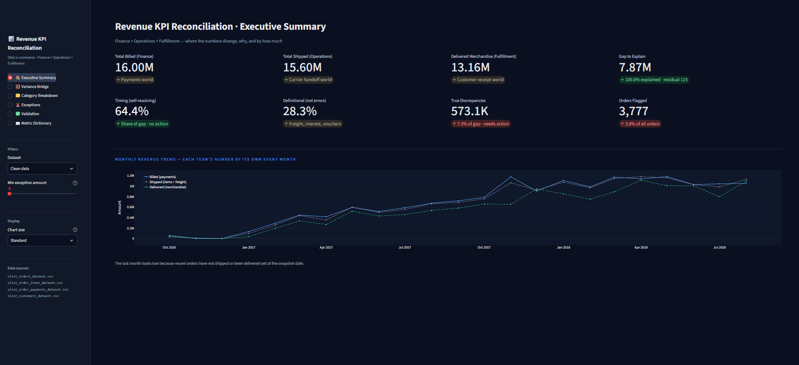

01
Revenue KPI Reconciliation Engine
Why do Finance, Operations and Fulfillment report different revenue, and where exactly do the numbers split?
Case 01 · Analytics Engineering
Revenue KPI Reconciliation Engine
Why do Finance, Operations and Fulfillment report different revenue, and where exactly do the numbers split?
What I did
- Compared what was billed, shipped and delivered across about 99,000 orders from the Olist Brazilian e-commerce dataset.
- Split every order's gap into timing differences, definition differences (freight, vouchers, installment interest) and true discrepancies (cancellations, duplicate payments, amount mismatches, orders never shipped or delivered), then ranked the orders worth investigating.
- Built the pipeline in SQL with dbt on DuckDB: staging, intermediate and mart layers, Jinja macros, seed files for the metric dictionary, and tests that check totals tie out.
- Proved the detector works by planting 450 known errors in a copy of the data and scoring it on precision and recall.
- Delivered the results in a Streamlit dashboard with a waterfall bridge, category breakdown, exceptions list with CSV export and a metric dictionary. GitHub Actions runs the build and tests on every push.